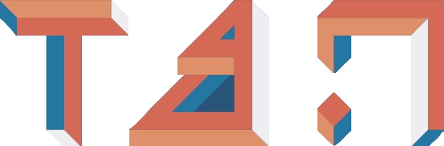

Bidipta Sarkar

I am a first-year DPhil student in Engineering Science at the University of Oxford in the FLAIR and WhiRL labs, co-supervised by Professor Jakob Foerster and Professor Shimon Whiteson. I am funded by the Clarendon Fund Scholarship in partnership with a Department of Engineering Science Studentship.
I received my BS in Computer Science with Honors and Distinction at Stanford University (2020-2024), where I was also a member of Professor Dorsa Sadigh's ILIAD lab since my sophomore year.
I am interested in creating AI agents that can interact with their environment and safely work alongside humans and other autonomous agents, with a growing focus on integrating natural language into AI coordination. My research broadly spans three subfields of computer science:
• Multi-Agent Reinforcement Learning: Enabling independently trained agents to cooperate on a common task and form conventions.
• Vision: Capturing meaningful information about an agent's environment from sensors.
• Graphics: Simulating environments while balancing speed and realism.
Posts
(November 2023, Video) My talk on Diverse Conventions for Human-AI Collaboration
(August 2023, Blog Post) Overcooked in Thousands of Kitchens: Training Top Performing Agents in Under a Minute
(Living Document) Emacs Setup for macOS and GNU/Linux
Publications
LOB-Bench: Benchmarking Generative AI for Finance – an Application to Limit Order Book Data

Training Language Models for Social Deduction with Multi-Agent Reinforcement Learning
Bidipta Sarkar, Warren Xia, C. Karen Liu, Dorsa Sadigh
International Conference on Autonomous Agents and Multiagent Systems (AAMAS), May 2025
Stanford Senior Honors Thesis, May 2024
Paper / Stanford Digital Repository / Website / Code / Models

Physically Grounded Vision-Language Models for Robotic Manipulation

Diverse Conventions for Human-AI Collaboration

An Extensible, Data-Oriented Architecture for High-Performance, Many-World Simulation
Brennan Shacklett, Luc Guy Rosenzweig, Zhiqiang Xie, Bidipta Sarkar, Andrew Szot, Erik Wijmans, Vladlen Koltun, Dhruv Batra, Kayvon Fatahalian
Transactions on Graphics 2023
Paper / Website / RL Environments / Blog / Colab


Preprints
An Interactive Agent Foundation Model
Zane Durante*, Bidipta Sarkar*, Ran Gong*, Rohan Taori, Yusuke Noda, Paul Tang, Ehsan Adeli, Shrinidhi Kowshika Lakshmikanth, Kevin Schulman, Arnold Milstein, Demetri Terzopoulos, Ade Famoti, Noboru Kuno, Ashley Llorens, Hoi Vo, Katsu Ikeuchi, Li Fei-Fei, Jianfeng Gao, Naoki Wake*, Qiuyuan Huang*
arXiv, February 2024

Other Projects
Temporally and Spatially Novel Video Frame Synthesis using 4D Video Autoencoder
Bidipta Sarkar, Xinyi Wang, Kathy Yu
CS231n Final Project, Spring 2022
(Best Project Poster Award)
Report / Poster / CS231n Tweet / Code

Simulating Food Interactions with Material Point Methods in Houdini
CS348C Final Project, Winter 2022
Report / Houdini File / Video


Virtual Hand Interactions with ARKit
CS231a Final Project, Winter 2022
Report / Code / Demo Video

The Guardian
CS148 Final Project, Fall 2022
Report / Final Image / View 2 / No Material / Blend File
{kind=link}
{kind=link}

Teaching and Service
Peer Reviewer
ICLR 2025, ICML 2025, ICRA 2025, IEEE RA-L (Oct 2024, April 2025), NeurIPS 2024
Stanford Center for Teaching and Learning CS Tutor

Tau Beta Pi Mentor

Section Leader (CS 106A and 106B)